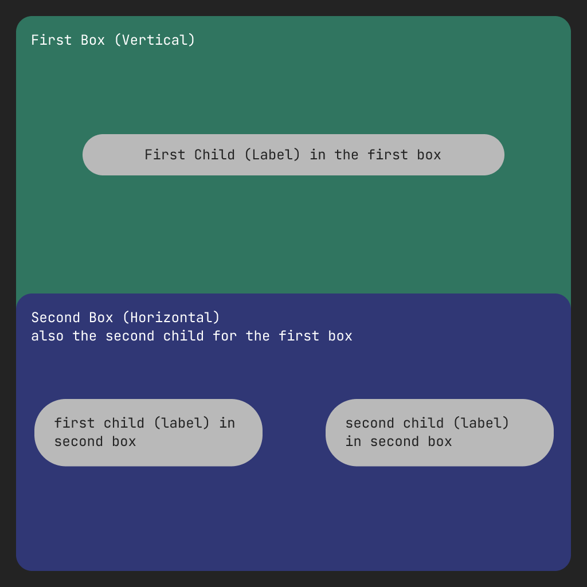
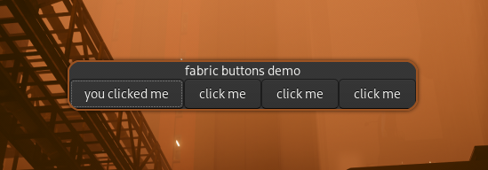

What is Fabric?
Fabric is a widgets framework written and configured in Python. Fabric's main goals are to provide you a simple, easy and high-level way to declare and manage desktop widgets. It follows signal control flow to make events handling much easier than ever. Fabric was heavily inspired from multiple other projects on the community like eww, ags, and Waybar to provide you a better experience in a familiar way.
Why Fabric?
Fabric might be your framework of choice if you already know how to program in Python or if you don't know how to configure the other alternatives. Fabric is type hinted in a proper way and it integrates nicely with code editors to give you the best typed, auto-completed and docstringed experience you can get. Because Fabric is ultimately a Python library, it also gives you the option to use other Python libraries in your code.
Fabric and GTK
Fabric uses GTK version 3, a widget and application development toolkit. Specifically, Fabric uses the python bindings of GTK (PyGObject). Without GTK, Fabric wouldn't exist!
What is Cairo?
Cairo is a 2D graphics library used by GTK to draw surfaces and widgets. GTK allows you to draw custom surfaces and widgets through Cairo, and Fabric extends GTK even more by adding widgets that don't exist in GTK.
Installation Guide
I's really simple to get Fabric working, you just...
[!TIP] If you use Arch Linux, Fabric is available in the AUR under the name
python-fabric-git. If you use a different distribution or would prefer to install on your own, continue to step 1.
1. Install Python
Fabric requires Python version 3.11 or later. Check your distribution's instructions or package manager to get the required version.
- Arch Linux:
sudo pacman -S pythonfor the most recent version - OpenSUSE:
sudo zypper install python311for the most recent version of Python 3.11
2. Install Dependencies
Fabric requires the following dependencies to run:
gtk3cairogtk-layer-shelllibgirepositorygobject-introspectiongobject-introspection-runtimepythonpython-pippython-gobjectpython-cairopython-logurupkgconf
[!NOTE] Names of packages and installation instructions vary across distributions and systems. You may have to do some searching for your system.
To install all dependencies:
- Arch Linux:
sudo pacman -S gtk3 cairo gtk-layer-shell libgirepository gobject-introspection gobject-introspection-runtime python python-pip python-gobject python-cairo python-loguru pkgconf - OpenSUSE (tested on Tumbleweed):
sudo zypper install gtk3-devel cairo-devel gtk-layer-shell-devel libgirepository-1_0-1 libgirepository-2_0-0 gobject-introspection-devel python311 python311-pip python311-gobject python311-gobject-cairo python311-pycairo python311-loguru pkgconf
3. Install Fabric
You can either install Fabric globally (not recommended) or in a virtual environment.
Virtual Environment
The recommended way to install Fabric is through a virtual environment.
- To install this way, first make a folder for your new project:
mkdir <your-folder-name>
- Next, change directories to this new folder:
mkdir <your-folder-name>
- Create a new virtual environment:
python -m venv <your-virtual-environment-name>
- Source the newly created virtual environment:
source venv/bin/activate
- You can now install Fabric in your newly-created virtual environment.
pip install git+https://github.com/Fabric-Development/fabric.git
Global Install
Alternatively, you can install Fabric globally using the following command:
pip install git+https://github.com/Fabric-Development/fabric.git
This method is more prone to dependency issues.
Congrats! Fabric is now installed, and you can run and use it as long as you would like. To get auto-completion and type annotation functionality in your text editor, head over to the stubs installation guide.
Obtaining a Stubs Package
Code auto-completions and type annotations in your editor require one of the following packages to function. Each package has its own installation guide.
PyGObject-Stubs
PyGObject provides a Python package that gives you simple auto-completions. It's not perfect - not all gi repositories are type-annotated or docstringed. This works if you're planning to stick to the documentation of GTK and Fabric.
FakeGir
FakeGir is a Python script that generates an overrides file for your editor to use; it's not considered a real stubs package because you will have to configure your editor to use the overrides file instead of the hints from the code.
GenGir
GenGir generates a stubs package and installs it for you, whether for global Python packages or a virtual environment. Also the maintainer's personal favorite tool out of these options.
Fabric Stubs
There is an ongoing process to write a stubs package made to be used with Fabric based on a refined version of the stubs produced by GenGir. This package is not yet public, though that may change in the future...
Prepare
Here's some stuff to prepare before hopping into Fabric...
Python
Fabric is an advanced and complex Python library. To take advantage of the full capabilities of Fabric, you should at least know the basics of Python and have some understanding of the following concepts:
- Packages: Installing packages via
pipand using virtual environments - Variables & Data Types
- Functions with both
defandlambda - Conditionals
- Loops: For- and while-loops
- Exception Handling:
try,except,finally - Classes and Object-Oriented Programming
Python Learning Resources
- Official Tutorial
- Automate the Boring Stuff, a free online book for complete beginners to programming
- Learn Python in y Minutes, complete cheat sheet for people who know programming already
- Swaroopch's free Python book
- Codeabbey, exercises for beginners
GTK
If you plan to hack into Fabric and create your own widgets or contribute, you will need some understanding of GTK. GTK learning resources are listed in the hacking guide.
Ready?
Assuming you already have Fabric installed by following this guide, let's get started by writing your first widget!
Creating Your First Widget
Assuming you have Fabric installed, it's time to write your first widget!
The Basics
Here's an example of using Fabric to define a simple widget - you don't have to understand every line yet, since this guide will walk you through it.
import fabric # importing the base pacakge
from fabric.widgets.window import Window # grabs the Window class from Fabric
from fabric.widgets.label import Label # gets the Label class
window = Window() # creates a new instance of the Window class and assign it to the `window` variable
label = Label("Hello, World") # creates a new Label instance with the content being "Hello, World" and assigns it to `label`
window.add(label) # adds the label to the window
window.show_all() # to make the window and all of its children appear
fabric.start() # to start fabric
Run the code using python path/to/your/file.py
if everything goes fine, you should see a regular window that looks like this:

This code first imports Fabric and the widgets we need to use -- a Window and a Label. It creates a new instance of each widget, with the Label being initialized with the text "Hello, World". It then adds the label widget to the window, shows the window and all of its children, and starts fabric so the window is rendered.
"Now what?" Now, we do some real stuff!
Level 1: Boxes
Now let's demonstrate some boxes with some labels.
import fabric # importing the base pacakge
from fabric.widgets.window import Window # grabs the Window class from Fabric
from fabric.widgets.box import Box # gets the Box class
from fabric.widgets.label import Label # gets the Label class
box_1 = Box(
orientation="v",
children=Label("this is the first box")
)
box_2 = Box(
orientation="h",
spacing=28, # adds some spacing between the children
children=[
Label("this is the first element in the second box"),
Label("btw, this box elements will get added horizontally")
]
)
box_1.add(box_2)
window = Window(
children=box_1 # there's no need showing this window using `show_all()`; it'll show them itself because the children are already passed
)
fabric.start()
Result (notice the alignment of the labels):

Here's a visual representation for more clarity:

You probably now have an understanding of how box containers can work with different orientations. Let's keep going.
Level 2: Buttons
First, here's the code:
import fabric
from fabric.widgets.box import Box
from fabric.widgets.label import Label
from fabric.widgets.button import Button
from fabric.widgets.window import Window
def create_button():
button = Button(label="click me")
button.connect("button-press-event", lambda *args: button.set_label("you clicked me"))
return button
box = Box(
orientation="v",
children=[
Label("fabric buttons demo"),
Box(
orientation="h",
children=[
create_button(),
create_button(),
create_button(),
create_button(),
],
),
],
)
window = Window(
children=box,
)
fabric.start()
Result:

This demo creates a window with a box inside of it with the orientation set to vertical (for now, let's call it the first box). The first child inside that box is a label with the text "fabric buttons demo", and the second child inside the first box is another box. Let's call this the second box. This second box has 4 buttons, with each button created by a function that handles creating and connecting them. Since individual instances of widgets can't be children of other widgets twice, the create_button function creates completely new instances of Fabric buttons. These buttons' button-press-event signals are then connected to an anonymous function that changes the label to "you clicked me" when they are pressed by the user.
[!TIP] When you write a widget using Fabric, you're actually creating a genuine GTK widget under the hood! Fabric's purpose is to simplify and add an enjoyable touch to the widget-making process. As we delve into widget creation, we might, for instance, nest a button within a box or embed text inside a button. This approach to defining widgets will feel remarkably familiar to frontend developers and those who have experience writing HTML.
What's a Services?
Services are kind of "data servers" for Fabric. They have methods and properties like normal objects, but signals are emitted when a property of a service gets changed. Other programs and users can connect to these signals so that they get notified when changes happen.
Services follow a paradigm called the observer pattern, so it starts doing a task in the background while your code is executing and doesn't block the main thread. Users can connect to these services to be notified of changes in properties.
What are Fabricators?
Fabricators are special classes that can grab you info from external shell commands or internal Python functions. Fabricators can also read streams of data like a shell command that stays running or a Python generator function.
Fabricators give you some important options during initalization, including:
- The initial value the fabricator should be initialized with
- Where to poll the data from, whether it is a Python function/generator or a shell command
- The poll frequency: how often you want the fabricator to poll the function or command in milliseconds
- Whether you want data as a stream (for polling data from generators and stream shell commands)
So, let's look at some examples of using fabricators!
Media Player State
This example utilizes a fabricator to read a stream from an external command (playerctl -f status) and print the current media status when it changes.
import fabric
from fabric.utils.fabricator import Fabricator
# create a fabricator to continuously monitor player state using the command
player_fabricator = Fabricator(poll_from="playerctl -F status", stream=True)
# define a function to handle state changes
def print_state_change(fabricator, value): # notice that the first argument is the fabricator itself
print(f"player state changed: {value}")
# connect the fabricator to the "changed" signal and register the handler
player_fabricator.connect("changed", print_state_change)
# start the main loop
fabric.start()
# output (may vary)
# player state changed: playing
# player state changed: paused
# player state changed: playing
# ...
Periodic Date Updates
in this example, we use a fabricator to poll data from the shell command date every 500ms and print the output of it.
import fabric
from fabric.utils.fabricator import Fabricator
# create a fabricator to periodically retrieve the date and time
date_fabricator = Fabricator(poll_from="date", interval=500) # 500 milliseconds
# define a function to handle date updates
def print_date(fabricator, value):
print(f"current date and time: {value.strip()}")
# connect the fabricator to the "changed" signal and register the handler
date_fabricator.connect("changed", print_date)
# start the main loop
fabric.start()
# output (may vary)
# current date and time: Mon Mar 4 02:50:10 AM EET 2024
# current date and time: Mon Mar 4 02:50:10 AM EET 2024
# current date and time: Mon Mar 4 02:50:11 AM EET 2024
# current date and time: Mon Mar 4 02:50:11 AM EET 2024
# current date and time: Mon Mar 4 02:50:12 AM EET 2024
# ...
Advanced Polling
In this example we fabricate a function instead of a shell command, and demonstrate how to use a stopping condition.
import fabric
from fabric.utils.fabricator import Fabricator
# global variable to track the counter
number = 0
def generate_number(fabricator):
global number
number += 1
return number
# create a fabricator to poll the number generation function
function_fabricator = Fabricator(poll_from=generate_number, interval=300) # 300 milliseconds
def handle_number(fabricator, value):
if value == 43:
fabricator.stop_polling()
print("fabricator stopped")
else:
print(f"generated number: {value}")
# connect the fabricator to the "changed" signal and register the handler
function_fabricator.connect("changed", handle_number)
# start the main loop
fabric.start()
# output
# generated number: 1
# generated number: 2
# generated number: 3
# ...
# generated number: 42
# fabricator stopped
The CLI utility and client
When you start fabric (using the start function), Fabric will start executing the GTK main thread and start a DBus client, which allows you to execute code on-the-fly and get information about your configuration file. Fabric grabs your global and local environment so when you execute code using the client you get all of your variables, objects, and/or modules.
The CLI utility is just a command line tool to use the client instead of dealing with DBus communications yourself.
Usage
$ python -m fabric --help
Usage: python -m fabric [OPTIONS] COMMAND [ARGS]...
Options:
--help Show this message and exit.
Commands:
execute executes a python code within the running fabric instance
info gets info about the currently running fabric instance
Examples
$ python -m fabric info -j
{'file': '/home/<user>/.config/fabric/bar.py'} # this is just an example, your output might differ, outupt is in json format because of the -j flag
$ python -m fabric execute "bar.hide()" -j # executing python code
{'source': 'bar.hide()', 'exception': ''} # no errors
$ python -m fabric execute "bar.this_method_does_not_exist()" -j # error should return
{'source': 'bar.this_method_does_not_exist()', 'exception': 'AttributeError("\'StatusBar\' object has no attribute \'this_method_does_not_exist\'")'} # there's an error, the exception got returned by Fabric
FAQ
[!TIP] If you're using Fabric inside a virtual environment managed by something other than the
venvmodule included bypythonand you're getting import errors (and all dependencies exist), try using Fabric in a virtual environment generated bypython -m venv venv.
General
Audio service/widget is not working
libcvc is probably missing, clone Fabric and install libcvc using the script included (scripts/install_libcvc).
My window does not show up
Try the following debugging steps:
- Check that you don't have any blocking code that runs before Fabric (i.e doing web requests)
- Check if the window is shown using the
show_allfunction
Wayland
My window size goes crazy for a second and goes back to normal size
This is a known issue when showing an empty GTKLayerShell window on wl-roots compositors. A workaround is to make sure not to show any windows that are empty; you can set the show_all argument to False until you add a child to the window. You can use the .show_all() method to show the window once you do.
My window shows up as a normal window, not a layer
This might happen if the GDK_BACKEND environment variable is set to x11 or anything other than wayland; this may also happen if your compositor does not support the layer-shell protocol (e.g. GNOME is refusing to implement the protocol)
If your compositor supports the protocol, you can fix this issue by setting the GDK_BACKEND variable to wayland (e.g. env GDK_BACKEND=wayland python path/to/fabric/config).
My eventbox isn't eventboxing properly
If you're on hyprland try downgrading to 0.28.0, this is a known issue with hyprland layer surfaces.
If you're not on hyprland, provide more information through a GitHub issue or our Discord server.
My widget isn't blurring its background on hyprland
Add these lines into your hyprland config:
layerrule = blur, fabric
layerrule = ignorezero, fabric
X11/Xorg
[!WARNING] Fabric's X11/Xorg backends are still experimental; issues might occur.
I can't add margin to my window
Try setting the window type to "popup".
My window has rounded corners that I didn't set
Check your compositor configuration; it may be setting rounded corners for Fabric windows.
When I set my window to have transparency, I get a black background color
This may be caused due to you begin having no running compositor; check out picom or compton (no longer maintained).
Hacking into Fabric
Fabric is made to be a hackable package at its core. This guide will walk you through making your own modifications to Fabric's source!
Notes
[!NOTE] Please note that Fabric is built using GTK version 3; widgets from other versions are either incompatible or will require more effort to get to work.
[!TIP] Having knowledge about how GTK and GObject works will greatly enhance your hacking ability while reducing issues along with the way; these are some useful resources to learn more about GTK and GObject.
[!TIP] If the widget you're trying to implement was already implemented somewhere else (even if it was in another language) using GTK (version 3) and/or Cairo, porting it will be simple: you can just use the same drawing functions, since the Cairo bindings don't differ from language to another.
Development Environment
Before doing anything else, you should prepare your development environment; to do that, read this page.
Source Tree
Widgets
Fabric has a very special widget at its core: Widget(fabric.widgets.widget). Nearly every other Fabric widget inherits properties and methods from this widget. This makes it simple to make a modification that is reflected across all widgets.
Services and Objects
Fabric has the Service base class (at fabric.service). New Fabric services should be inherited from this class. When doing this, make sure to replace the decorator @property with @Property (imported from fabric.service) to get notifiable properties in your service.
To create signals, you can change the variable __gsignals__. __gsignals__ takes a SignalContainer object (from fabric.service), and that signal container takes Signal objects as arguments. An example:
from fabric.service import *
class MyUsefulService(Service):
__gsignals__ = SignalContainer(
Signal("my-really-useful-signal", "run-first", None, (object,))
# signal name, run flags, what does the call back return, the argument type of the callback
)
def __init__(self):
self.emit("my-really-useful-signal", "this is my super useful argument passed to you, what a useful string")
For more details on services, head over to this wiki page.
Writing a New Widget
To start writing your own widget, you you should first check if GTK already includes that widget; after all, we don't want to reinvent the wheel. If GTK does implement the widget you're looking for, then the work will be much simpler. Even if it doesn't, you don't have to worry, since this page will also teach you how to write your own widget from scratch!
My Widget Exists Within GTK
Do one of the following to get the widget:
-
Just use it: Fabric is fully compatible with GTK widgets, so you can import the widget and use it however you need to. Note that this will not provide the new widget with all of Fabric's features (i.e setting the style within the construction), so if you require these see the option below.
-
Fabricate the widget: fabricating a widget means that you take a GTK widget and convert it into a Fabric widget; this will make it possible to use Fabric's features like special methods and properties.
Fabricating a GTK Widget
To start fabricating a widget, first check the type of the widget you want to fabricate. In general, there are two types of widgets: a regular widget and a container.
Normal widgets (AKA non-containers) are widgets that inherit properties and methods directly from the base Widget class and can't hold any child widgets (i.e. labels and images).
Containers are widgets that inherit properties and methods from the base Container class (which eventually inherits methods and properties from the base widget). These container widgets can hold one or multiple widgets as children (i.e. boxes and windows).
Next, you should locate where your widget class lives. For example, if your non-container widget is under the name MyWidget in GTK:
import gi # import the gi repository to get GTK from it later
gi.require_version("Gtk", "3.0") # graps the version 3 of GTK since this is what fabric uses
from gi.repository import Gtk # now we have GTK (version 3) imported
from fabric.widgets.widget import Widget # imports fabric's base widget
class MyFabricatedWidget(Gtk.MyWidget, Widget): # creates a new class named "MyFabricatedWidget", this class inherits the desired GTK widget and fabric's base widget
def __init__(self, **kwargs): # the initializer function, **kwargs (a dict) means whatever you pass as extra argument will be in that dict
# you can set more arguments to this newly created class, this is useful if you want to make this widget able to do more during the initialization phase
# you may add more logic here to handle the new arguments (if any)
super().__init__(**kwargs) # initializes the new mixed class
Fabricating a container widget is the same process as fabricating a normal widget; just use the Container widget from Fabric instead of Widget when inheriting.
Debugging
Oh, you ran into an issue. Don't panic! If your code does not work at all, read the error; most of the time, it provides a lot of information (i.e the call stack).
There are some specific errors that may be more difficult to debug, such as errors produced by GTK itself due to your function/method call. These errors, in most cases, only provide the assertion error (which might be handy to get a traceback). Here's how to debug these invisible Heisenbugs:
-
Check your environment variables
- For example, I try running an X11 window under X11 but the environment variable
GDK_BACKENDis set towaylanddue to me forcing the editor to to set it this way and forgetting. This was the problem that caused my Wayland window to open as a normal window, not a layer. (Another possibility here was that I was using GNOME, which hasn't implemented the layer-shell protocol on Wayland and therefore makes it impossible to do anything to fix issues with it.)
- For example, I try running an X11 window under X11 but the environment variable
-
Use a debugger and breakpoints to identify the source of the problem
- For example, I decide to use a function that I know exists in the source of the GI repository package I'm trying to use, but my code produces a segmentation fault every time I run it. (Later, while reading the docs, I figured out that this specific function was not exposed to the binding I was using.)
-
Check your thread-safety
- For example, I make a new service and it works like a charm. After an unknown amount of time, though, the entire thing crashes. I later found out from a friend that I was updating the properties of an object defined in the main thread in a different thread, leading to a loss of thread safety. After discovering this issue, I found a function that did the same thing I needed to do (like
GLib.idle_add) in a thread-safe way.
- For example, I make a new service and it works like a charm. After an unknown amount of time, though, the entire thing crashes. I later found out from a friend that I was updating the properties of an object defined in the main thread in a different thread, leading to a loss of thread safety. After discovering this issue, I found a function that did the same thing I needed to do (like
-
Variable or method overwrites
- For example, I make a new class that inherits
Service. I then write a new method:connect, but when I run the code I get anArgumentErroreven though I pass everything necessary into the method. I then find out that theServiceclass already has aconnectmethod that is used internally, so when I try to useconnectin my new class I'm actually calling the method in theServiceclass. I fixed this issue by using a different class to inherit from, though you can also solve this type of issue by simply renaming the method.
- For example, I make a new class that inherits
Visual Bugs
There's another kind of bug - the visual bugs. A visual bug means that the code works as expected, but there are graphical issues with rendering or drawing. A great tool to use for these issues with Fabric or GTK is the GTK Inspector.
To get the inspector window in Fabric, set the environment variable GTK_DEBUG to interactive before running your code.
If you still can't find what's causing your code not to act as it should, you can always hop into Fabric's Discord server and ask your question - we're happy to help!
Development Environment
This page will walk you through setting up your development environment for Fabric.
Fabric Source
To start developing, you should grab the latest commit of Fabric so that you're up-to-date.
To do this, run this command:
git clone https://github.com/Fabric-Development/fabric
[!NOTE] Cloning the source repository this way will create a new folder in your current working directory.
You can then change your directory into this newly created clone.
cd fabric
Virtual Environment
[!NOTE] You can continue inside an integrated terminal now if you prefer. For this example, we use VSCode:
code .
Create a Python virtual environment:
python -m venv <your-virtual-environment-name>
Source your new virtual environment:
source venv/bin/activate
We now have a separate environment for packages.
Finally, install the current Fabric source in place as a package:
pip install -r requirements.txt
pip install -e .
And you're ready! Continue on this page to start hacking.
Style Guide
First of all, we really appreciate your intention to contribute into our project!
This is the style guide of our project; here, we'll walk you through how can you write silk-looking code that will integrate nicely into our codebase.
Code Formatting
All code should be formatted using the ruff python formatter.
Indentation must be 4 spaces. Please do not use tabs or any number other than 4 spaces.
Definitions and Naming
We employ different naming conventions based on use cases:
snake_case: Functions or variablesSCREAMING_SNAKE_CASE: ConstantsPascalCase: Classeskebab-case: GObject signals/properties
Comments
Follow the PEP 8 guidelines when adding comments. In a nutshell, comments should look:
# Like this.
##not like this..##
#nor like this..
#--/ nor whatever else. /--#
Logging
Logging functionality should use loguru. Adhere to these rules:
- Be concise; avoid verbosity.
- Refrain from committing files with
debug-level log statements. - Reserve the log level
errorfor critical cases, such as severe component failures or dependencies crucial to the entire program. - Avoid unnecessary
infostatements in low-level classes/modules, unless it's a service subclass.
If uncertain about where to log, feel free to inquire in the pull request!
Conditionals
We use inline if-statements in our codebase if the condition will change the value of only one object:
x = "the x object" if unexpected_feature is not True else "the x man"
And we use regular if statements if a block of code will be executed instead of one object being changed:
if unexpected_feature is True:
x = "the unknown guy"
y = "idk"
z = 4002
...
# This is much more concise and clear than
x = "the unknown guy" if unexcpected_feature is True else None
y = "idk" if unexcpected_feature is True else None
z = 4002 if unexcpected_feature is True else None
Logging The Changes
When you're finally done working on your commits and everything is ready, just add information about the commit(s) you made to the CHANGELOG.md file describing the changes made in a simple language and a small amount of characters. For example:
-- Format --
<Change-Number>. <#Pull-Request-Number> <Commit-Message>
-- Examples --
1. <#Pull-Request-Number> feat: something awesome!
2. <#Pull-Request-Number> feat: new method to do magic!
3. <#Pull-Request-Number> fix: fabricated, this fixes/closes <issue number if exists>!
4. refactor: i dunno how to fabricate XD